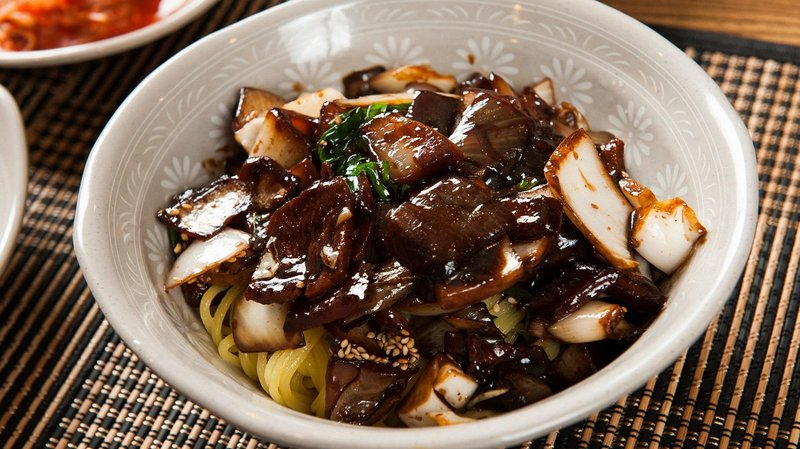

|
||||
TtokpokkiTtokpokki merupakan makanan berbahan kue beras dengan kuah kental yang pedas. Biasanya, ttokpokki disajikan di pinggan besar bersama dengan telur rebus, fish cake dan aneka sayuran serta bawang bombay.

JajangmyeonJajangmyeon adalah jenis panganan mie dengan saus kedelai hitam yang gurih kental dengan tambahan potongan daging.Ketika dimakan harus mencampur mie dengan sausnya secara merata. | Masakan PopulerWarung korean food diseluruh indonesia |
|||